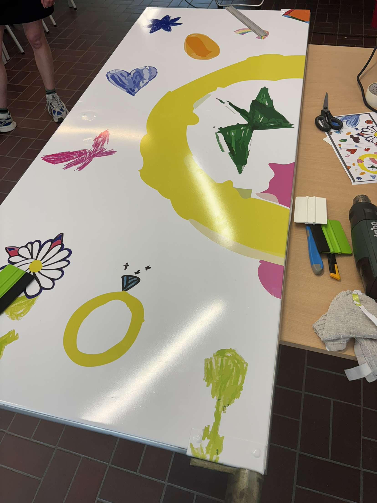
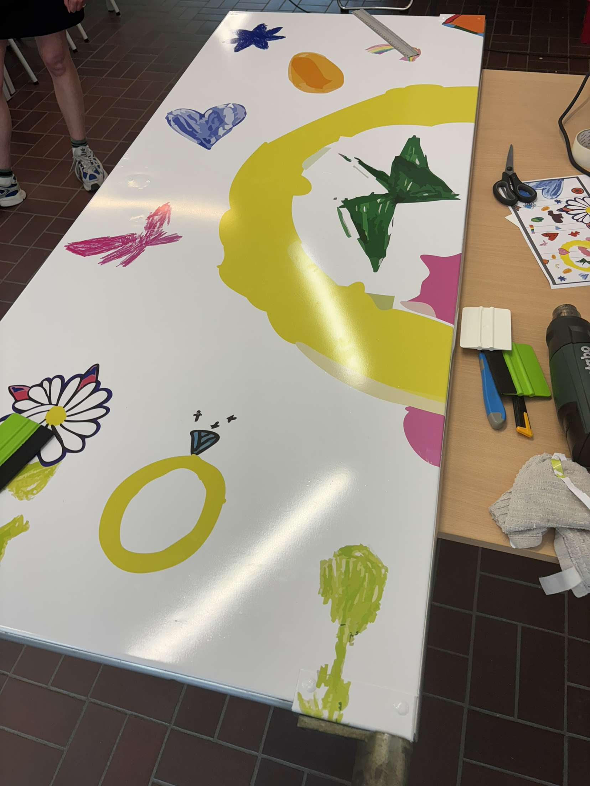

Bestickering wc-deuren
Schoolopdracht De klimop – 2025
Voor de school Klimop heb ik meegeholpen met het bestickeren van de wc-deuren. Het ontwerp en de print had iemand anders gemaakt mijn rol lag volledig bij de uitvoering. Samen met drie anderen hebben we de folie aangebracht, omdat het om een groot oppervlak ging en het belangrijk was dat er geen plooien ontstonden. Voor dit project is bewust gekozen voor een duurdere folie van hogere kwaliteit, die beter geschikt was voor dit project en zorgt voor een strak eindresultaat. 06-2025
 
